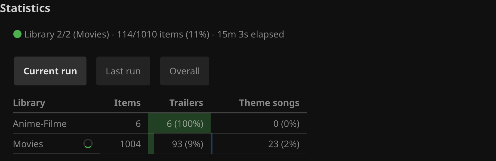
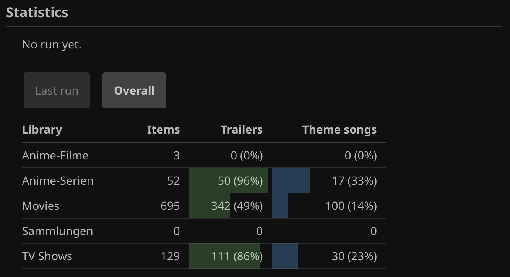
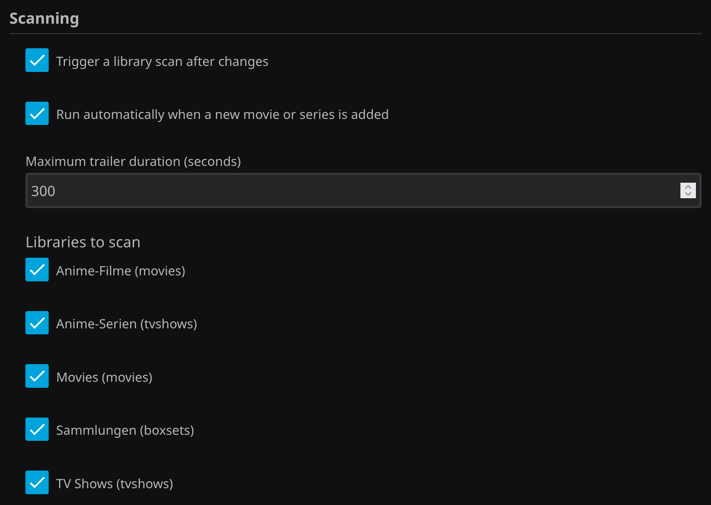
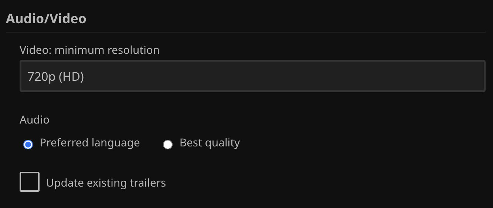
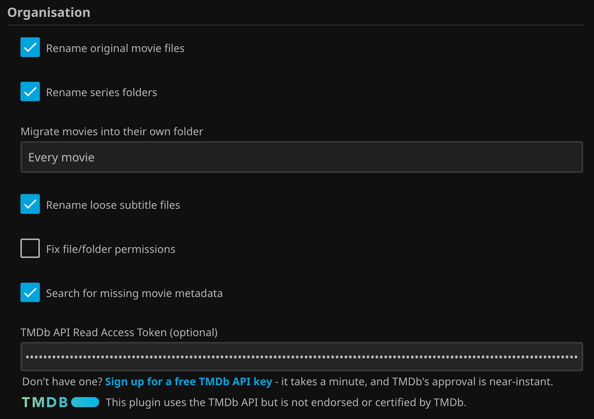
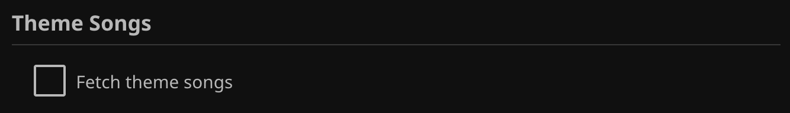
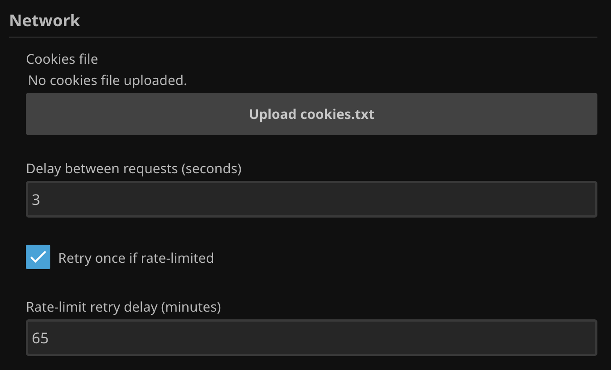
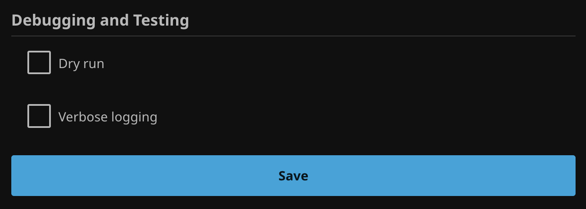

Configuration
All settings live on Dashboard → Plugins → Jellyfin Enricherr, grouped the same way as below. Defaults are chosen to be safe for a first run. A Show setting descriptions checkbox at the top of the page hides every explanation below (already covered here in more detail anyway), leaving just the controls themselves - on by default.
Statistics


Not a setting — a table with three tabs:
| Current run | Shown only while a run is actively in progress - a live-updating view (refreshed every few seconds), one row per library in scope for the run (not just the one currently being processed), with coverage numbers building up in real time and a spinner marking whichever library is currently being processed. A library not reached yet shows "n/a" rather than a bare 0, so the full scope of the run is visible from the start instead of libraries only appearing as the run reaches them. No need to wait for the run to finish or dig through the log to see progress. Shows "No run currently in progress" the rest of the time. |
|---|---|
| Last run | Movies and TV series as two rows, from the last completed run's own numbers - untouched by whatever a currently-in-progress run is doing. Trailers/Theme songs here are a delta - what that one run itself found, downloaded, or upgraded - not how many of the library's items have one overall (that's what Overall, and Current run building up toward the same idea live, already show); no coverage bar either, since a percentage of the whole library wouldn't mean anything for a single run's own finds. Shows the run's date, duration, and how it ended, with a Details toggle for the full per-run breakdown - how many were scanned, already had a trailer, downloaded, upgraded, or not found, plus why a run stopped early if it did. |
| Overall | One row per library on the server - always every library, regardless of which ones are currently selected under Libraries to scan below - showing how many of its movies/series actually have a trailer or theme song right now. Recomputed fresh each time the page loads, not cached. |
On the Current run and Overall tabs, the Trailers and Theme songs columns show a tinted coverage bar behind the count - green for trailers, blue for theme songs - filled to the percentage of that library's items already covered, with the percentage shown alongside the count.
Scanning

A run processes one library at a time; as soon as a library's own movies and series are done, if anything in it was downloaded, moved, or renamed, this scans just that library - not the whole server - so the change shows up right away without waiting for either the next scheduled scan or every other configured library to finish too.
In addition to the schedule below (and a manual run), also triggers a run whenever a new item is added to the library — waiting for that item's own metadata refresh to actually finish first, not just the moment it's first discovered on disk (before its title/year/provider ids are resolved). Several items added in a burst (e.g. a bulk import) are debounced into a single run, not one run per item. Only reacts to items genuinely new to Jellyfin — a routine periodic refresh of something already in the library is deliberately ignored, so it never causes a run all on its own. Turn on "Verbose logging" below to see exactly when this is watching a new item and when it triggers (or skips triggering because a run is already in progress).
Search results longer than this are assumed to be a full movie, compilation, or unrelated video — not a trailer — and rejected.
Which libraries to scan, listed live from your server. Leave everything unchecked to scan every library; check specific ones to scope each run to just those. Applies to both movies and TV series — only libraries that actually contain them are useful here. The settings above apply the same way regardless of which libraries are picked.
Audio/Video

Resolution and audio preference apply to every search, including an item's very first one — a fresh search keeps trying further sources for a better result until it meets the target, rather than settling for the first one found. Update existing trailers below additionally makes a trailer you already have eligible for the same treatment, on top of new ones already getting it.
The minimum acceptable trailer resolution, chosen from 480p (SD) up to 2160p (4K).
Which matters more. Preferred language (default) searches in the item's own language first, the same as any other search (see How It Works) — but the search stops at the first successful download regardless of resolution, so it can settle for a mediocre same-language result without ever trying English, which often has a genuinely higher-quality upload available. Best quality skips the native-language search stage, going straight to English/best-available — prioritizing resolution over language match.
Also re-checks trailers you already have against the resolution and audio preference above, searching for a better replacement if one falls short. The existing file is only ever replaced by a genuine improvement — both are probed and compared after the new attempt completes, so a re-attempt that can't beat it leaves the original untouched.
Off by default: turning it on means re-running the full search/download flow for every under-quality trailer on every run until it clears the bar, not just once — meaningfully more requests to YouTube, and so more exposure to rate limiting, until your library catches up. Worth turning on for a pass or two after a big library import, then switching back off.
Organisation

Renames the movie file itself to match its resolved title, e.g. Movie Name (Year).ext.
Renames a TV series' own top-level folder to match its resolved title, e.g. Series Name
(Year), and its season subfolders to Jellyfin's own canonical Season NN naming
(Specials for season 0) — based on Jellyfin's own resolved season number for each
(its Season entity's own index, the same reliable matching that already finds the right
trailer), not parsed from the subfolder's own name. A release-style folder name (tags, resolution,
season ranges, ...) can still resolve to the right trailer via search — Jellyfin's own provider
matching is forgiving enough for that — but the folder names themselves are what drive Jellyfin's own
poster match in the collection/list view and displayed title, which the search step never touches.
Episode files themselves are never renamed or moved.
Jellyfin only recognizes a local trailer file when the movie has its own dedicated folder (jellyfin/jellyfin#10077) — a correctly named trailer sitting in a folder shared by other movies is silently ignored. Three modes:
| Disabled | Never move any movie. A movie that doesn't already have its own folder is skipped entirely rather than downloading a trailer Jellyfin could never recognize — see Troubleshooting. |
|---|---|
| Only movies with a trailer | Move only movies that already have, or just got, a trailer. The rest of a flat library is left untouched. |
| Every movie | Move every movie encountered, regardless of trailer status. |
A release-named subtitle file sitting directly in a movie's own folder (e.g.
Movie.1998.1080p.WEBRip.x264.AAC-[YTS.MX].srt, rather than matching the movie's own
filename) is renamed to match it, so Jellyfin recognizes it as an external subtitle. A
Subs subfolder of already correctly per-language-named files (e.g. en.srt)
is left untouched — only a loose, unmatched file directly in the movie's folder is renamed, and no
language code is added (there's no reliable way to know what language it's actually in — Jellyfin
treats a bare <movie>.srt as the default/undetermined-language subtitle). Only
runs once the movie is already in its own dedicated folder, same precondition trailer placement
itself needs.
When a folder/file this plugin creates or writes into ends up with permission bits or a group that deny access to whichever user Jellyfin itself runs as (common when media was added by a different user/process, e.g. over SMB), matches its permission bits and group to an already-working reference file next to it. Off by default — this plugin changing filesystem permissions on its own is an intrusive default; turn it on only if you actually hit permission errors. No effect on Windows, where this is always a no-op.
For a movie Jellyfin has no metadata match for at all — common for oddly-named releases (scene tags, internal archive/catalog numbers) that defeat Jellyfin's own matching even though the real title is findable once that noise is stripped — searches using this plugin's own cleaned-up title and applies a match, but only when it's confident. Candidates are judged in this order: (1) title — a strict similarity match against the candidate's primary title (tolerant of a trailing archive number or subtitle Jellyfin's own search wouldn't be), or its localized titles if a TMDb credential is set below; (2) duration — the candidate's own claimed runtime, checked against the actual file via ffprobe, not Jellyfin's cached value, wins whenever it's available: an available runtime that disagrees rejects a candidate no matter how exact its title match is, since even that can occasionally be the wrong movie entirely (two unrelated films can share the exact same title); (3) year — only consulted as a looser fallback for anything less than an exact title match, and only when a runtime comparison genuinely isn't possible at all. An exact title match is accepted on its own only in that same situation — no runtime available to check it against. A candidate's release year turned out to be an unreliable signal in practice (an archival/broadcast date can get mistaken for the actual release year), so duration is trusted well ahead of it whenever both are available. Never touches a movie Jellyfin already matched, right or wrong — this only ever fills in a genuine gap. Off by default: it's the only setting here that changes a movie's actual metadata rather than just adding a trailer/theme song next to it.
Don't have one? Sign up for a free TMDb API key — it takes a minute, and TMDb's approval is near-instant.
Used to also check each candidate's localized titles (TMDb's per-language translations, not the separate, sparsely-populated "alternative titles" list), not just its primary one — helps most when the primary title alone doesn't match closely enough, and also breaks ties in favor of TMDb when two entirely different candidates from different providers happen to share the same title. Jellyfin's own bundled TMDb integration never fetches these, and doesn't expose a way to reuse its own key for it, so this is a separate credential of your own. Paste in either the "API Read Access Token" (the long one; TMDb's own current API docs use this for every example) or the older, shorter "API Key" — both work. Leave empty to skip localized-title lookups and judge every candidate on its primary title alone. Only used for this one lookup, nowhere else in this plugin. Has no effect unless "Search for missing movie metadata" above is also on.
This plugin uses the TMDb API but is not endorsed or certified by TMDb.
Theme Songs

Also downloads a local theme song (theme.mp3) for each movie/series, looked up on
ThemerrDB by TMDb id - the same
community-curated database the Themerr-jellyfin
plugin uses, so an item only gets a theme song here if Themerr would have offered one too. Only the
lookup is shared with Themerr; the download itself goes through this plugin's own yt-dlp
pipeline (see How It Works) instead of Themerr's
downloader, which fails outright on plenty of videos yt-dlp handles fine.
An item with no TMDb id, no ThemerrDB entry, or not in its own dedicated folder is silently skipped -
this never touches an existing theme.mp3, whether user-provided or already downloaded by
Themerr.
ThemerrDB Theme song lookups use ThemerrDB © LizardByte, licensed under BSD-3-Clause - a community-curated database; this plugin isn't affiliated with or endorsed by LizardByte.
Network

A Netscape-format cookies.txt, used by yt-dlp for authenticated/
age-restricted YouTube access. Export one with a browser extension like
"Get cookies.txt LOCALLY"
while signed in to a YouTube account that's passed age verification, then upload it here. Saved
immediately on upload, separately from the Save button for everything else.
Minimum wait before each individual yt-dlp request. A large library can add up to many
separate requests with no pacing between them, which can trip YouTube's own rate limiting — see
rate-limit handling. Lower this only if you're
confident it won't happen; 0 disables the delay entirely.
If YouTube rate-limits the session anyway, wait then retry the rest of the run exactly once instead of stopping immediately. See How It Works for the full behavior.
How long to wait before that single retry. Defaults to a bit past YouTube's own stated "up to an hour" ceiling. Only used (and only editable) when Retry once if rate-limited above is on.
Debugging and Testing

Logs what a run would do — what it would search for, download, rename, or move — without actually downloading, renaming, or moving anything. Safe to run any time to preview the effect of a configuration change.
Logs each rejected search candidate's specific reason (title mismatch, duration too long, missing trailer keyword, ...). Off by default since a movie/series needing several fallback searches can generate dozens of these lines, burying what actually matters for a normal run. Turn on when diagnosing why a specific movie/series isn't finding a trailer it should — see Troubleshooting.
A small file browser, scoped to your configured libraries' own root folders — never the server's whole filesystem. Clicking a movie file selects it, enabling "Run for selected item" to run this plugin's own processing against just that item: title resolution, missing-metadata search (if enabled), trailer/theme song fetch, and rename/migrate. Browsing into a folder selects that folder instead, enabling "Run for this folder" — it resolves to the one video file inside automatically, which is what you want to test something like loose-subtitle renaming (only relevant once a movie already has its own dedicated folder). Only one of the two is ever selected at a time: picking a file clears a folder selection and vice versa, so a button is only ever enabled while its own kind of selection is the current one — never left over from a folder you've since navigated away from. The result reports things like how many loose subtitles were renamed, alongside the trailer/theme song outcome. Useful for seeing exactly how a specific file is handled without waiting on, or otherwise affecting, a full scan. This is a real run, not a dry run, unless "Dry run" above is also checked.